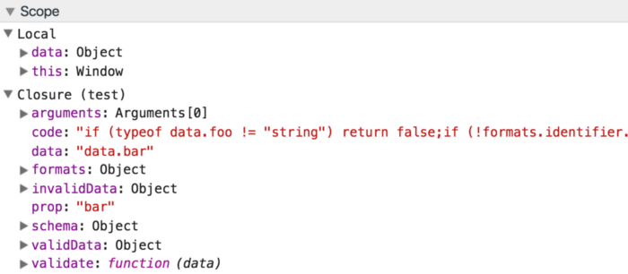
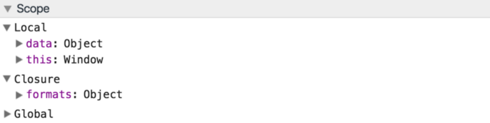

I have been hearing the mantra “eval is evil” for many years by now and none of the arguments presented to support it made any sense until very recently. Let’s explore the myths of eval, uncover the real evil behind it and find out the alternative way to reap eval’s benefits without its evilness.
All the code examples below are available in eval-is-evil repository.
Myth #1: Eval Is Bad For Performance
This statement is usually supported by some trivial example like this:
var foo = eval('bar.' + x);This code can be used to access bar object property which name is stored in the variable x. Instead, the author would argue, you should use the code below to access such property:
var foo = bar[x];Although this way of using eval indeed reduces execution speed, I cannot imagine any JavaScript developer, however unexperienced, who would think of using eval in this case.
Let’s consider another example that also involves property accesses but where using eval dramatically improves performance.
We have some nested object and we need to define some transformation of this object to a shallow object. We want to define such transformation using configuration rather than just writing code. It can be preferable if we want to be able to dynamically change such configuration and in many other scenarios. So if our nested object looks something like this:
var source = {
services: {
db: {
host: 'db.example.com'
},
audit: {
host: 'audit.example.com'
}
}
};and the shallow object we want to have should look this way:
var result = {
db: 'db.example.com',
audit: 'audit.example.com'
};the transformation from nested to shallow object could look as this one:
var transformation = {
db: '/services/db/host',
audit: '/services/audit/host'
};By the way, the format of the string defining the location of the data in the nested object is called JSON pointer.
Ok, so if we had such transformation, how would we write the code to transform a nested object to a shallow one? One approach is to simply iterate properties in the transformation and generate the resulting object:
function transform(source) {
var result = {};
for (var key in transformation) {
var path = transformation[key];
var segments = path.split('/');
var data = source;
for (var i=1; i<segments.length; i++) {
data = data && data[segments[i]];
}
result[key] = data;
}
return result;
}Although this code works, it is not very efficient if the transformation has to be performed on the server many times.
Another approach would be to generate the code that performs the transformation and convert this code into a function using eval (or Function constructor):
var code = 'return { ';
for (var key in transformation) {
var path = transformation[key];
var segments = path.split('/');
var data = 'source';
var expr = data;
for (var i=1; i<segments.length; i++) {
data += '.' + segments[i];
expr += ' && ' + data;
}
code += key + ': ' + expr + ', ';
}
code += '};'
var transform = eval('(function(source) { ' + code + ' })');The last line can be replaced with:
var transform = new Function('source', code);For our transformation the generated function will be:
function (source) {
return {
db: source && source.services && source.services.db && source.services.db.host,
audit: source && source.services && source.services.audit && source.services.audit.host,
};
}This dynamically generated code will execute many times faster than the first example where the transformation is performed using a loop. Creating this function takes some execution time but it happens only once.
This example shows that you can substantially improve the performance of your application using dynamic code generation and eval. The same approach is used for generating model accessor methods (get, set, etc.) in milo.js framework.
Myth #2: Eval Is Security Risk
This statement probably assumes that you would receive JavaScript code in the request to the server and execute it using eval:
app.get('/execute', function(req, res) {
res.send(eval(req.body.code));
});The code above indeed has some problems. If req.body.code were process.exit(1) the application would exit with error. Some worse things may easily happen too. But I cannot see how anybody could write code like this. User input is usually sanitised, particularly in cases when this input is used for code execution/generation.
Let’s consider another example. Say, we have a mass mailing application that sends the messages to the list of recipients and we require that the message that the user submits is a template using available fields from a recipient record:
var recipients = [
{ first_name: 'John', last_name: 'Smith' },
{ first_name: 'Jane', last_name: 'Doe' }
];
var messageTemplate = 'Hello {{first_name}} {{last_name}}!';We could create the actual messages to all users in a loop:
var messages = recipients.map(createMessage);
function createMessage(recipient) {
return messageTemplate.replace(/{{([a-z_]+)}}/ig,
function(match, key) {
return recipients[key];
}
);
}The code above will create all the messages we need, but there is a much faster way to achieve it. We can generate the function createMessage. It doesn’t have any security implications even though messageTemplate is received from the user:
var code = 'return "';
code += messageTemplate.replace(/{{([a-z_]+)}}/ig,
function(match, key) {
return '" + data.' + key + ' + "';
}
);
code += '";'
var createMessage = eval('(function(data) { ' + code + ' })');
// or new Function('data', code);In a few lines of code we have created a super-simple “templating engine” that compiles templates into JavaScript functions.
The template "Hello {{first_name}} {{last_name}}!" will be compiled to:
function(data) {
return "Hello " + data.first_name + " " + data.last_name + "!";
}Executing the function above is hundreds (if not thousands) times faster than the code that does not use eval. Creating this function is always safe — if some unsafe code is used inside curly braces it will not be executed because the regular expression won’t match. For example, the template
"Hello {{process.exit(1)}}!"will generate this function:
function(data) {
return "Hello {{process.exit(1)}}!";
}i.e. an unsafe interpolation was not replaced with the code.
The same approach to compiling templates into JavaScript functions is used in the fastest and the most concise templating engine doT.
Myth #3: Eval Is Difficult To Debug
I am not sure where this is coming from. The code passed to eval is a normal JavaScript code — you can add breakpoints, inspect variables, etc. Debugging code passed to eval or to Function constructor is not that much different from debugging any JavaScript code, you just need to either format it during code generation or to use js-beautify package.
Let’s consider one more example when you want to define a super-simple schema for your object (not JSON-schema!) and validate it according to this schema:
var schema = {
foo: 'identifier',
bar: 'date'
};We assume here that all properties should be strings and they should match some known formats (identifier and date in this case).
Our formats can be defined as regular expressions:
var formats = {
identifier: /^[a-z_$][a-z0-9_$]*$/i,
date: /^\d{2}\/\d{2}\/\d{4}$/
};The data that we want to validate:
var validData = {
foo: 'abc',
bar: '15/09/2016'
};
var invalidData = {
foo: '1',
bar: '15-09-2016'
};We can validate the data by iterating the properties in the schema and checking the data properties against the formats:
function validate(schema, data) {
for (var prop in schema) {
var value = data[prop];
if (typeof value != 'string') return false;
var pattern = formats[schema[prop]];
if (!pattern.test(value)) return false;
}
return true;
}An alternative approach is to generate the code of the validating function from the schema and create this function using eval:
var code = '';
for (var prop in schema) {
var data = 'data.' + prop;
code += 'if (typeof ' + data + ' != "string") return false;';
code += 'if (!formats.' + schema[prop] + '.test('
+ data + ')) return false;';
}
code += 'return true;';
var validate = eval('(function(data) { ' + code + ' })');Our simple schema above would “compile” to this function:
function (data) {
if (typeof data.foo != "string") return false;
if (!formats.identifier.test(data.foo)) return false;
if (typeof data.bar != "string") return false;
if (!formats.date.test(data.bar)) return false;
return true;
}This approach to data validation when the schema is compiled to a JavaScript function is used in several JSON-Schema validators, including the fastest one — Ajv that I have created.
So Why Eval Is Evil?
Eval can dramatically improve performance, it doesn’t create security risks if used properly and it can be debugged without any problems. Why it should never be used then?
The problem with eval is that whenever eval creates a function, it becomes a closure that retains access to ALL variables in the current and in ALL parent scopes, regardless whether they are used by this closure or not. If you debug validate function from the third example in the chrome inspector you will see it:

Unlike eval, Function constructor doesn’t have this problem, the function that it returns is created in the global scope and it is not a closure.
Vyacheslav Egorov wrote about it 4 years ago and it is still the case today — eval is not optimised in node.js and browsers in the way normal closures are, that only retain access to the scope variables they use.
This issue has been pointed out by Russ Frank who has recently submitted a PR to Ajv that replaced eval with Function constructor to reduce memory utilisation.
In all examples but the last one we could easily replace eval with new Function. In the last example though the generated function should be a closure — it needs access to formats that are defined in the parent scope. So if we simply use Function constructor in the same way as before it won’t work. Instead we can do this:
var createValidate = new Function('formats',
'return function(data) { ' + code + ' }');
var validate = createValidate(formats);As you can see Function constructor is used to create a function that returns a closure that has access to formats, but not to anything else:

Although this code is more verbose than with eval it doesn’t have the issue that makes eval really evil — retaining access to everything in all scopes from the current to the global.
So while code generation can be used to achieve serious performance benefits, direct calls to eval should be avoided. Instead Function constructor (or at least indirect calls to eval) should be used.